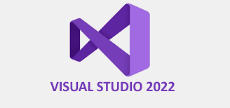
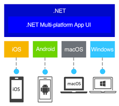
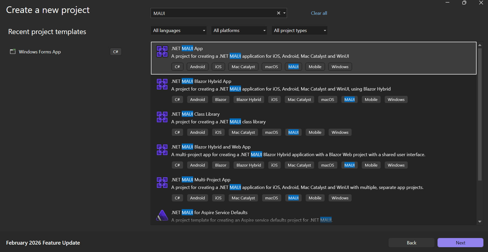
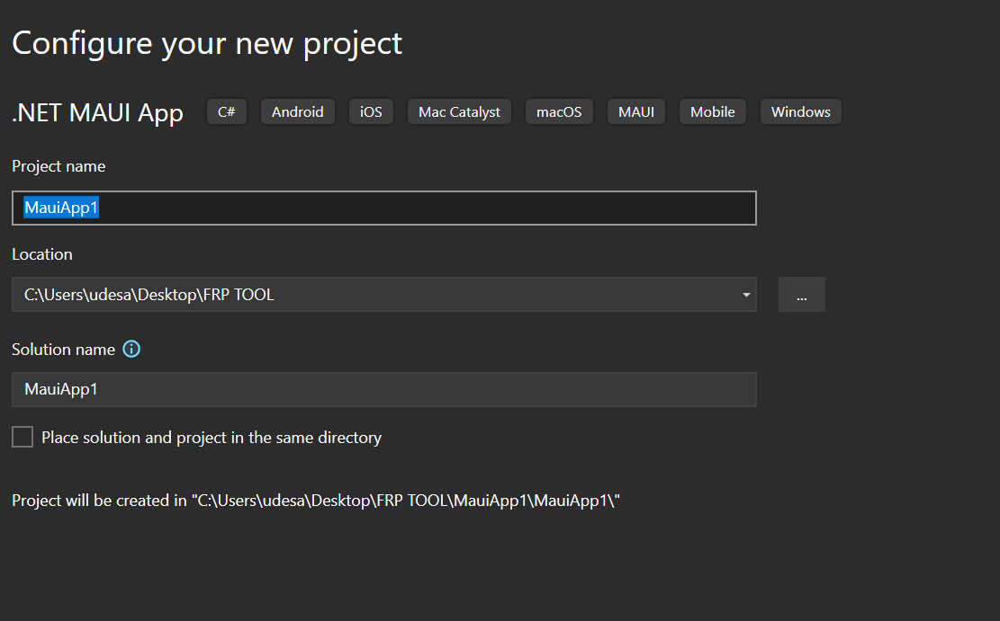
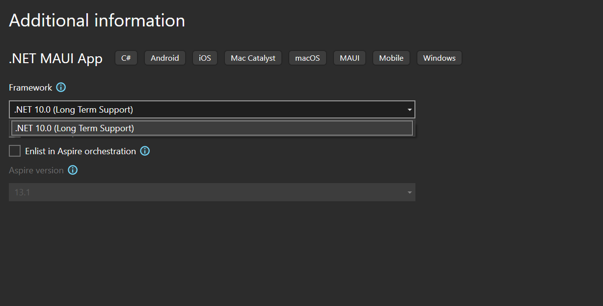
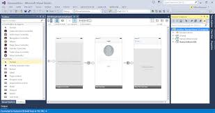
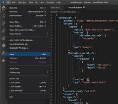
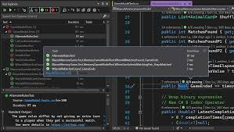
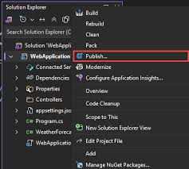

Learn how to build modern mobile applications using professional development tools and programming languages.

An IDE is the main software used by developers to build applications. Popular IDEs for mobile development include: • Visual Studio • Android Studio An IDE allows developers to: • Write program code • Design user interfaces • Debug applications • Test apps on devices Visual Studio Community Edition is widely used for building cross-platform apps using .NET MAUI.

A framework provides libraries and tools to simplify application development. .NET MAUI (Multi-platform App UI) allows developers to build applications for multiple platforms using one codebase. Supported platforms include: • Android • iOS • Windows • macOS Other mobile frameworks include Flutter, React Native, and native Android development.

To start development, a new project must be created inside the IDE. Basic steps: 1. Open Visual Studio 2. Click "Create New Project" 3. Select ".NET MAUI App" 4. Click Next The project will contain the main files needed to build the application.

The project name identifies the application. Examples: • MyFirstMobileApp • AlexoLearningApp • MobileToolsApp A good project name should be: • Clear • Short • Easy to remember The project name will also appear as the application name when installed on devices.

Developers must choose which .NET framework version the application will use. Examples: • .NET 7 • .NET 8 • .NET 9 Newer frameworks usually provide: • Better performance • Improved security • New development features After selecting the framework, the IDE generates the base application structure automatically.

The user interface defines how users interact with the app. In .NET MAUI, the interface is typically designed using XAML. Common UI components include: • Buttons • Text boxes • Images • Navigation pages • Lists and menus A good UI should be clean, responsive, and easy to use.

Application logic controls how the program behaves. This logic is written using programming languages such as: • C# • Java • Kotlin Examples of logic: • Button click actions • Data processing • User input validation • API communication Clean code makes applications easier to maintain and upgrade.

Testing ensures the application works correctly. Developers test apps using: • Android Emulator • iOS Simulator • Real mobile devices Testing helps detect bugs such as crashes, layout problems, and performance issues.

After development is finished, the application is compiled into an installable package. Examples: Android → APK or AAB iOS → IPA file Developers can publish apps to platforms like: • Google Play Store • Apple App Store Publishing requires screenshots, description, and developer account verification.